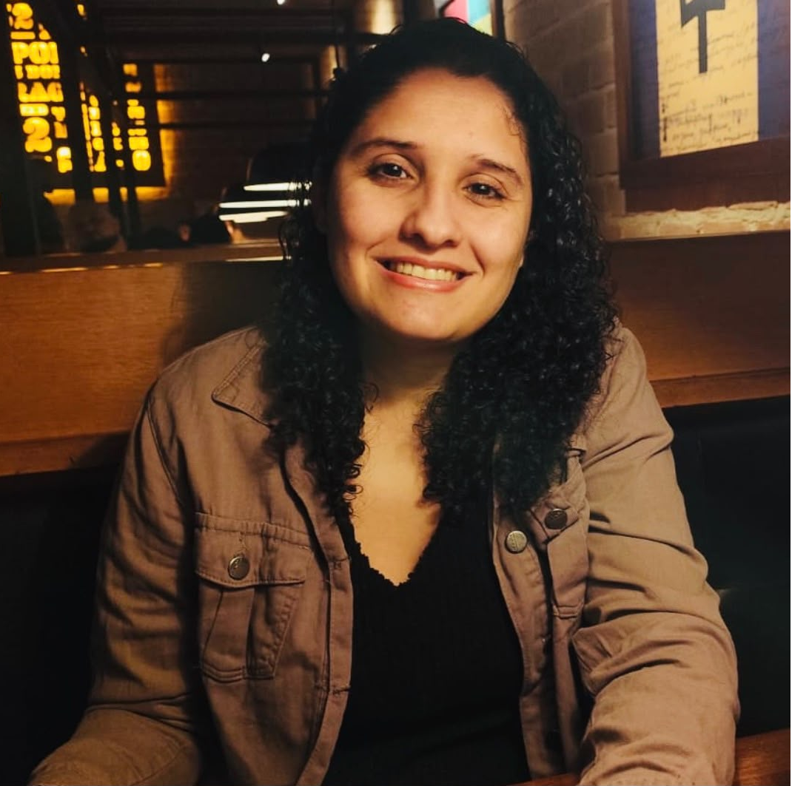
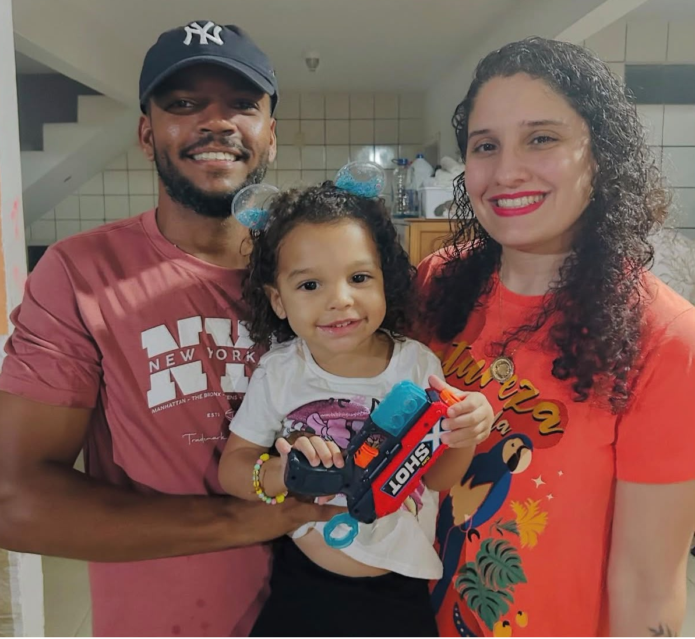

Página Inicial
Profissional com 7+ anos de experiência em logística, comercial e administrativo, com vivência sólida em supervisão de time operacional. Experiência em planejamento e coordenação de atividades diárias, acompanhamento e monitoramento de movimentação de mercadorias, gestão de agenda.
Links úteis:
Mais sobre alguma coisa
Em aprimoramento na área de análise de dados com Python e Power Bi(Senac) para otimização de indicadores e tomada de decisão baseada em dados.
Perfil organizado, focado em resultados e eficiência operacional.
Quem sou eu?

32 Anos, Casada com o Thiago Félix, Mãe da Maria Antônia de 4 anos.
Formada em Engenharia de Produção e Tecnóloga em Logística.
Meus hobbies

O que mais gosto de fazer é estar com minha família.
Amo ir à praia, cinema.
Amo ver o flamengo jogar.